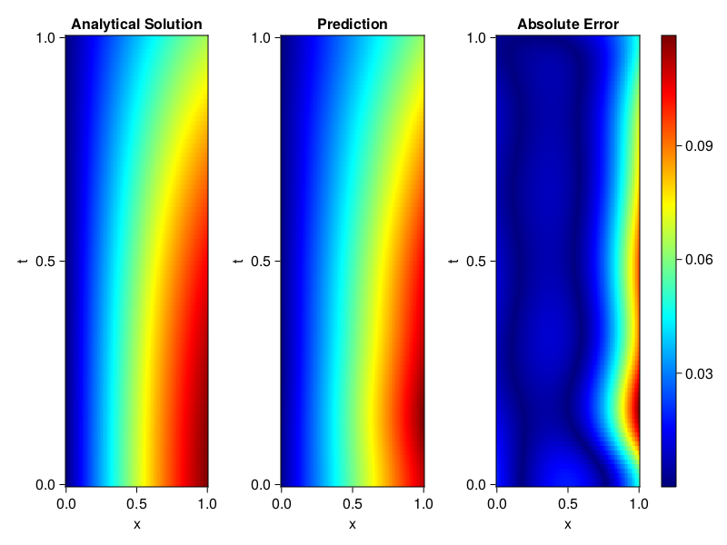
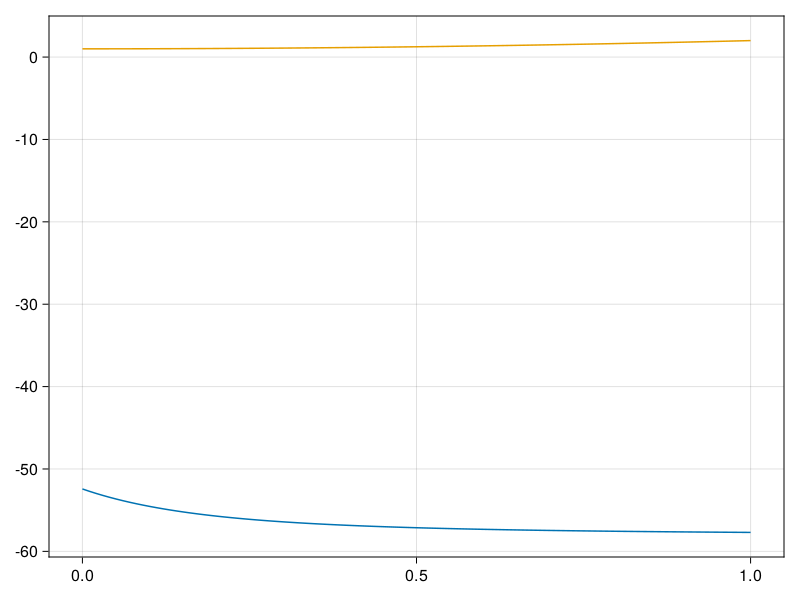

Inverse problem for the wave equation with unknown velocity field
We are going to sovle the wave equation.
using Sophon, ModelingToolkit, IntervalSets
using Optimization, OptimizationOptimJL
@parameters x, t
@variables u(..), c(..)
Dₜ = Differential(t)
Dₜ² = Differential(t)^2
Dₓ² = Differential(x)^2
s(x,t) = abs2(x) * sin(x) * cos(t)
eq = Dₜ²(u(x,t)) ~ c(x) * Dₓ²(u(x,t)) + s(x,t)
bcs = [u(x, 0) ~ sin(x),
Dₜ(u(x, 0)) ~ 0,
u(0, t) ~ 0,
u(1, t) ~ sin(1) * cos(t)]
domains = [t ∈ Interval(0.0, 1.0),
x ∈ Interval(0.0, 1.0)]
@named wave = PDESystem(eq, bcs, domains, [t,x], [u(x,t),c(x)])\[ \begin{align} \frac{\mathrm{d}^{2}}{\mathrm{d}t^{2}} u\left( x, t \right) =& c\left( x \right) \frac{\mathrm{d}^{2}}{\mathrm{d}x^{2}} u\left( x, t \right) + \cos\left( t \right) \left|x\right|^{2} \sin\left( x \right) \end{align} \]
Here the velocity field $c(x)$ is unknown, we will approximate it with a neural network.
pinn = PINN(u = FullyConnected((2,16,16,16,1), sin),
c = FullyConnected((1,16,16,1), tanh))
sampler = QuasiRandomSampler(500,100)
strategy = NonAdaptiveTraining(1, (10,10,1,1))NonAdaptiveTraining{Int64, NTuple{4, Int64}}(1, (10, 10, 1, 1))Next we generate some data of $u(x,t)$. Here we place two sensors at $x=0.1$ and $x=0.5$.
ū(x,t) = sin(x) * cos(t)
x_data = hcat(fill(0.1, 1, 50), fill(0.5, 1, 50))
t_data = repeat(range(0.0, 1.0, length = 50),2)'
input_data = [x_data; t_data]
u_data = ū.(x_data, t_data)1×100 Matrix{Float64}:
0.0998334 0.0998126 0.0997503 0.0996464 … 0.275281 0.267213 0.259035Finally we construct the inverse problem and solve it.
additional_loss(phi, θ) = sum(abs2, phi.u(input_data, θ.u) .- u_data)
prob = Sophon.discretize(wave, pinn, sampler, strategy; additional_loss=additional_loss)
@time res = Optimization.solve(prob, BFGS(), maxiters=1000)u: ComponentVector{Float64}(u = (layer_1 = (weight = [0.32234639243669 -0.48527738648991586; -0.2756489858185576 0.215747581245596; … ; 0.05141746792301704 1.369205409977812; 0.26191911456715833 -0.6133917857170642], bias = [-0.6183398097816967; -1.493842037778605; … ; -0.6713294242356285; -0.675879576139631;;]), layer_2 = (weight = [-0.005251961786026814 1.1190544540004375 … -0.10813001496649793 0.6184490873468755; -0.5775874157502704 -0.025783090688655624 … 0.7775943165064974 -0.40712039729714683; … ; -0.29806777764484477 -0.08931751447784612 … 0.6631756604848347 -0.7261163027896909; 0.5221995324326237 -0.3444704870485578 … -0.7629984283626812 0.4700237388643124], bias = [-0.8246086544154707; 1.0268756655618434; … ; 0.8559006254115348; -0.630407009817781;;]), layer_3 = (weight = [-0.37833927816393936 0.13025414557729434 … 0.5520722825267065 0.15193958069060162; 0.1483749565927111 0.08371593660937282 … 0.13856590401096067 0.38746110751312857; … ; 0.6142214773336928 -0.255815188359691 … 0.3488830457482804 -0.5040384910283946; 0.3877961197962191 -0.8428844458952565 … 0.40116092774614937 0.599899731361411], bias = [0.7071780384681104; -0.22065892634124012; … ; -0.6020783752411493; 0.27805615727761385;;]), layer_4 = (weight = [-1.522671466182802 -0.7132934074151779 … 0.27676444096504227 0.3378919698079306], bias = [0.04964704420312067;;])), c = (layer_1 = (weight = [-0.4592661069600726; -2.5341967872661915; … ; -0.47449740629893916; 1.6288951384032313;;], bias = [-0.35137432329171125; -0.5225705013388061; … ; -0.14534900919687566; 0.8196772109885114;;]), layer_2 = (weight = [0.30754379530564757 0.694938936026653 … -0.14190643271276068 -0.36343780961469163; 0.5286588664952505 -0.36897998350884886 … 0.5281617890467101 -0.7630011403518163; … ; -0.26203843439245406 -0.2087715194834633 … -0.683206617744076 0.49652049399318166; 0.3761109846533715 0.8058761625887463 … 0.06086959930057461 -0.5237263088243566], bias = [-0.26715667553112626; -0.02870165826051218; … ; 0.21449662037082257; -0.24447700412821904;;]), layer_3 = (weight = [3.2589957084998935 5.676944940664678 … -4.518990638758701 3.266807630292277], bias = [-2.8076706812493746;;])))Let's visualize the predictted solution and inferred velocity
using CairoMakie
ts = range(0, 1; length=100)
xs = range(0, 1; length=100)
u_pred = [pinn.phi.u([x, t], res.u.u)[1] for x in xs, t in ts]
c_pred = [pinn.phi.c([x], res.u.c)[1] for x in xs]
u_true = [ū(x, t) for x in xs, t in ts]
c_true = 1 .+ abs2.(xs) |> vec
axis = (xlabel="x", ylabel="t", title="Analytical Solution")
fig, ax1, hm1 = heatmap(xs, ts, u_true, axis=axis; colormap=:jet)
ax2, hm2= heatmap(fig[1, end+1], xs, ts, u_pred, axis= merge(axis, (;title = "Prediction")); colormap=:jet)
ax3, hm3 = heatmap(fig[1, end+1], xs, ts, abs.(u_true .- u_pred), axis= merge(axis, (;title = "Absolute Error")); colormap=:jet)
Colorbar(fig[:, end+1], hm3)
fig
fig, ax = lines(xs, c_pred)
lines!(ax, xs, c_true)
fig